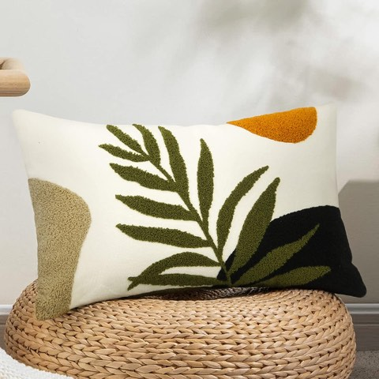
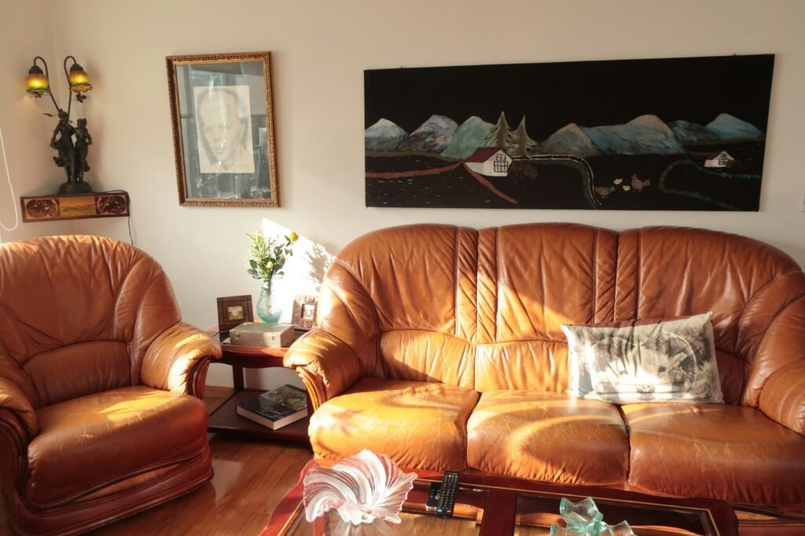
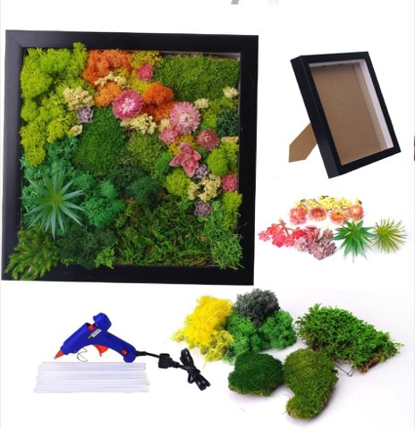
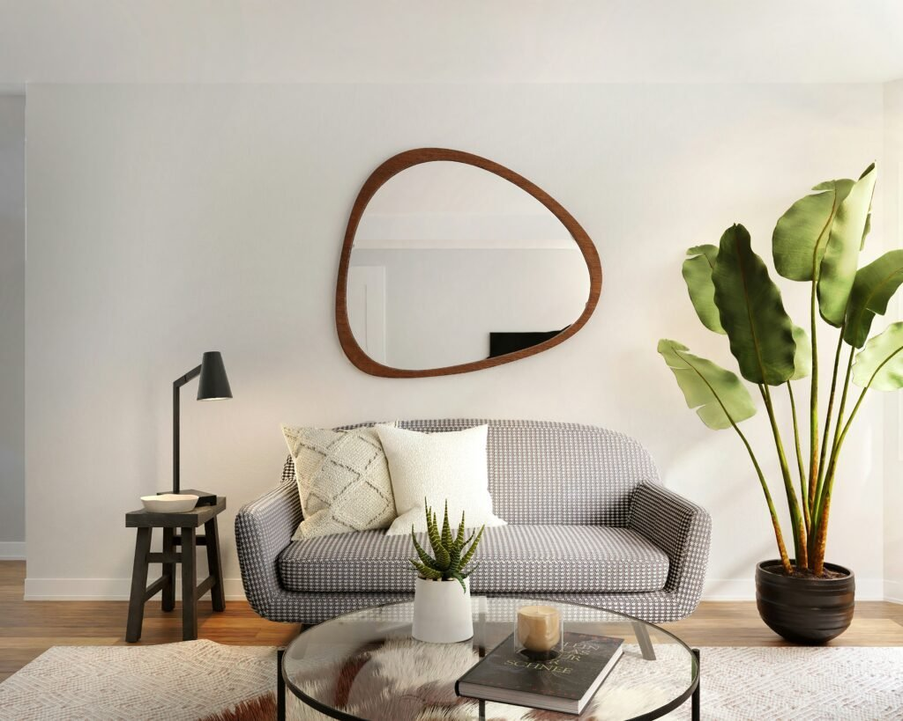
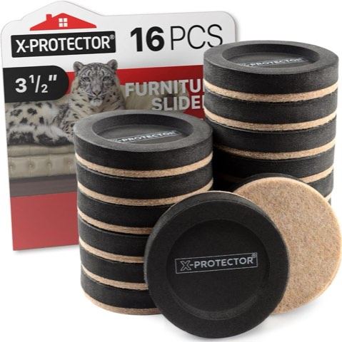
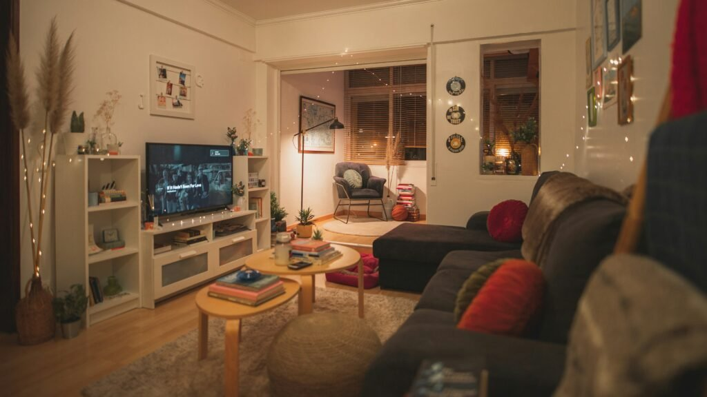
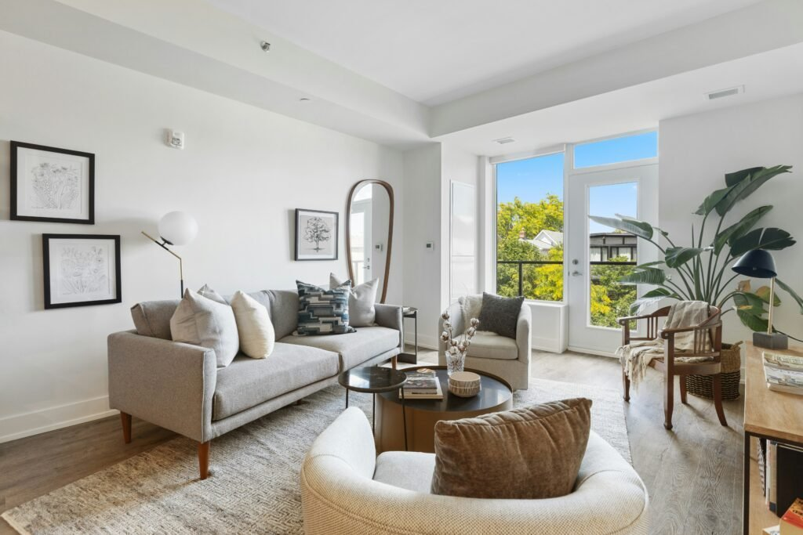
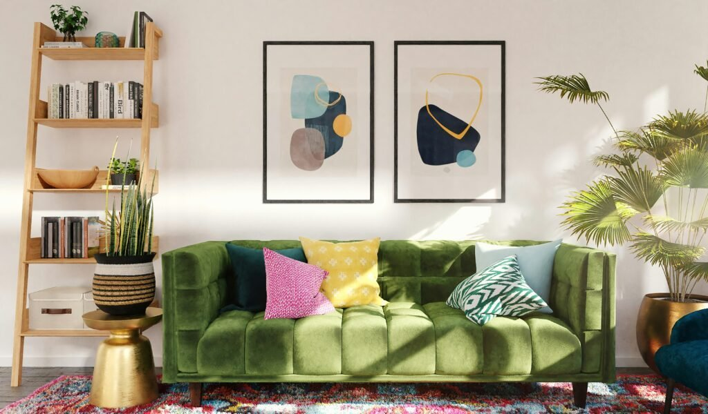

Mid-century is one of the more forgiving styles to pull off on a real budget, mostly because thrifted and secondhand pieces are so central to the look in the first place.
This covers specifically where to spend, where to save, and the DIY projects that close the gap between the two.



Merrycolor Boho Lumbar Throw Pillow Cover, 12 x 20 Inch, Tufted Abstract Mid-Century Style
Shop on AmazonAvoiding Trendy Burnout
Sticking to the style's genuine fundamentals, rather than chasing every passing micro-trend within mid-century, keeps the room from needing a refresh every year.
This is ultimately the best budget strategy of all, a room that doesn't need redoing saves more than any individual discount ever could.
Accessorize Without Overspending
Pattern used sparingly, organic elements, a few metallic touches, and books styled as decor round out the room's final layer at minimal cost.
These small additions matter more for the finished feel than their low price tags would suggest.
DIY Projects Worth the Effort
DIY wall art, refinishing old furniture, and building a gallery wall from existing or thrifted frames all add real designer-level flair without a significant budget line.
Updating light fixtures and adding a single statement wall round out the highest-payoff DIY projects for this specific style.




ACADOIT Moss Art Frame Craft Kit for Adults, 11 Inch, DIY Living Wall Hanging
Shop on Amazon
Get the Layout Right for Free
Starting with a clear focal point, keeping traffic flow open, and pulling furniture away from the walls are all genuinely free changes that significantly affect how the room feels.
This is one of the highest-value, zero-cost steps on this entire list.


X-Protector Felt Furniture Sliders for Hardwood Floors, 16 Pcs, 3.5 Inch
Shop on AmazonLighting: The Budget Secret Weapon
Layered lighting and warm bulbs cost very little but do more for the room's overall feel than almost any furniture purchase.
Shopping smart for fixtures specifically, secondhand, off-season sales, simple DIY updates, keeps this high-impact category genuinely affordable.

Pick a Palette That Doesn't Need a Repaint
Starting with neutrals, then adding earthy and retro accent tones through cheaper textiles and accessories, achieves the full palette without a single wall needing to be repainted.
Keeping the balance between neutral and accent colors in check avoids an overwhelming room that would need correcting, and spending, later.

Where to Spend and Where to Save
Tapered legs and clean lines matter more than material cost, which means a budget piece with the right silhouette often reads better than an expensive one with the wrong shape.
Versatile core pieces, a sofa, a coffee table, are worth spending more on, since they anchor the whole room and get used daily, while smaller accent pieces are the safest place to save.

Mix Vintage With Affordable Modern
One or two genuine vintage finds, paired with budget-friendly modern pieces that echo the same lines, capture most of the look's credibility for a fraction of an all-vintage room's cost.
This mixing strategy is the single most important budget principle on this entire list.

Less Is More, Especially Here
A sparser room with a few genuinely good pieces beats a fully furnished one stretched thin across cheaper items, both visually and financially.
This restraint also happens to be authentically mid-century, which makes the budget constraint and the style's own philosophy point the same direction.


Know Your Space Before Spending
Measuring the room and identifying its actual constraints before any shopping happens prevents the single most expensive budget mistake, buying something that doesn't fit.
This step costs nothing at all and saves real money later.
Why This Style Suits a Budget Approach
Mid-century's emphasis on genuine, found pieces over a fully matched furniture set means a thrifted, gradually assembled room actually looks more authentic than one bought all at once.
This is one of the few styles where budget constraints push toward the more correct version of the look, not a compromised one.

AWASEN Small Round Accent Side Table for Small Spaces
Shop on AmazonFinal Thoughts
None of this actually requires a big budget to work well.
Start with layout and lighting first, since both are free or nearly free, then build toward the anchor furniture pieces slowly as budget actually allows.
Mid-century genuinely rewards patience and real sourcing over one single big spend, which happens to be exactly what a real, realistic budget requires anyway.